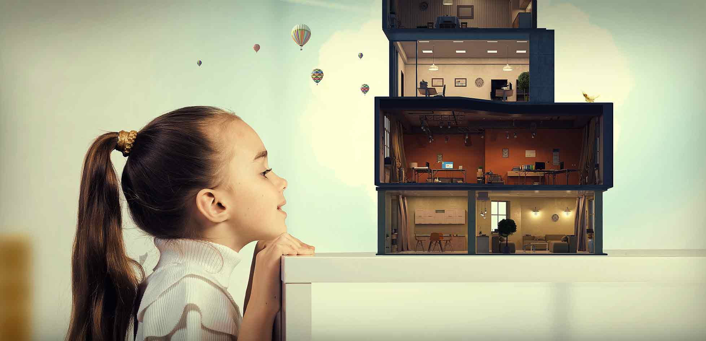

항상 고객을 생각하고, 고객과 같이 발전하고 동행할 수 있는
기업이 되도록 최선을 다하고있습니다.
MORE View
반도체, LCD설비, 생산장비사업 및 PLANT사업에 진출하여 우수한 기술력과
경험으로 성공적인 사업을 진행하고 있습니다
MORE View
미래를 선도하는 기업이라는 이념 아래 차별화된
고객가치를 창조하기 위해 끊임없이 노력하고 있습니다.
MORE View

미래를 선도하는 기업이라는 이념 아래 차별화된
고객가치를 창조하기 위해 끊임없이 노력하고 있습니다.
MORE View